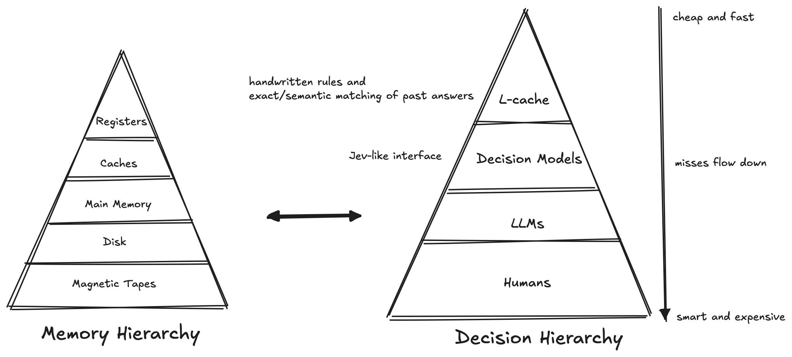

It is the maxim of every prudent master of a family, never to attempt to make at home what it will cost him more to make than to buy. The tailor does not attempt to make his own shoes, but buys them of the shoemaker. The shoemaker does not attempt to make his own clothes, but employs a tailor. The farmer attempts to make neither the one nor the other, but employs those different artificers. All of them find it for their interest to employ their whole industry in a way in which they have some advantage over their neighbours, and to purchase with a part of its produce, or, what is the same thing, with the price of a part of it, whatever else they have occasion for.
- Adam Smith in The Wealth of Nations (1776)
In the past few weeks, Jev and decision models in particular have been the talk of the town. As things are cooling down a bit, I thought it would be fun to systematically explore and forecast where all of this leads to.
The magic, as we all would agree, seems to be in the output, of which there can be three kinds: choice, score and noul. With choice, we provide a fixed list of options and the output is a probability for each option, summing to 1. The score is for rating something against an ordered list of levels, using a probability-weighted average of those levels. And finally, the noul, which some say is named after the Bernoulli trial, returns a number between 0 and 1: the probability that a given statement is true.
Here is an example using Jev 1.13 from OpenRouter:
REQUEST: {
"model": "typesafe/jev-1.13",
"state": "Some damn good curly fries - seasoning was something.",
"questions": {"answer": {"type": "score", "instructions": "How enthusiastic is the reviewer?",
"criteria": ["Lukewarm", "Happy", "Thrilled"]
}}}
RESPONSE: {
"model": "typesafe/jev-1.13-20260917",
"answers": {"answer": {"type": "score", "score": 1.48, "legend": {"0": "Lukewarm", "1": "Happy", "2": "Thrilled"},
"probabilities": {"0": 0, "1": 0.51, "2": 0.49},
"confidence": 0.27}},
.....
}There are a couple of interesting consequences as a result of this model. First, it's a well-defined output! We state the possible answers before asking the question, and the model has to pick among them. Second, every answer carries odds. As we will see later, we can leverage this to do some interesting arithmetic on them. Third, as the expense is in reading the state and consuming the input tokens, the output tokens are essentially free. Case in point: I did some napkin math on the above example. Assuming that a regular LLM would require 250 input tokens and 50 output tokens to produce this response, and that we have 400,000 such queries to process, the resulting 100M input tokens and 20M output tokens would cost $13 on GPT-5 nano ($8.5 with cached tokens) vs. $4.2 via Jev. And finally, it is fast!
Perhaps the most exciting revelation I had, is that this gives rise to a new form of memory hierarchy, which I have labeled as decision hierarchy.
As a refresher, pick your favorite textbook and flip to its memory management page. Here is what Tanenbaum has to say about memory hierarchies in his Modern Operating Systems book:
Over the years, people discovered the concept of a memory hierarchy, in which computers have a few megabytes of very fast, expensive, volatile cache memory, a few gigabytes of medium-speed, medium-priced, volatile main memory, and a few terabytes of slow, cheap, nonvolatile magnetic or solid-state disk storage, not to mention removable storage, such as DVDs and USB sticks. It is the job of the operating system to abstract this hierarchy into a useful model and then manage the abstraction.
These learnings can be applied in the realm of LLMs too. Assume that you have an L-cache consisting of a mixture of hand-written rules, and exact/semantic matching of past answers to the same question and its state. If so, Jev and Decision models can be imagined as the RAM, LLM as disk, and magnetic tapes as human beings. Each level handles what its confident about and passes the misses down to the level below.

But how do we decide on a confidence factor and pick a threshold? This is where Chow's rule from 1970 comes in. Let us motivate the idea first. Imagine a classifier \(C\) with \(n\) classes. For each input, the classifier generates a probability for each of the \(n\) classes. When the largest class has a probability close to 1, the model is sure about its decision, and mistakes are rare. However, when all the classes have equal probability, say \(1/n\), any answer is close to a guess. So, the errors come from the uncertain inputs. And to mitigate it, we need a higher form of intelligence - from decision models, to LLMs, and in the worst case humans. As I like to put it, the more “philosophically-NP” (not in a formal sense) a question is, the higher form of intelligence it needs to make a non-ambiguous judgement call.
But how do we decide whether we should give a response at a particular level or abstain from doing so? A simple way would be using threshold \(T\). For each input, we look at the top probability, say \(p_{max}\). If \(p_{max} \leq T\), we reject and hand the input on to the next level. If \(p_{max} \gt T\), we answer with the top probability outcome. With this approach, we get a dial that moves from \(T = 1/n\) to \(T = 1\). The higher the dial, the more rejects we get and fewer errors on what we keep.
However, this simple threshold approach does not take into consideration the price of the outcome. Particularly, what is the cost of us answering a question wrong at a level, and the cost of declining to answer at a level. Say, a wrong answer costs 1, rejecting costs a fraction \(F\), and a right answer costs 0. If we answer with class \(k\), we are wrong with probability of \(1 - p_k\). The probability of being wrong would be at its smallest for the top class, \(1 - p_{max}\). Therefore, a second approach would be to answer only if we beat the price of rejecting. In other words, answer when \(1 - p_{max} \lt F\).
Take an example where \(F=0.2\) and \(p_{max}=0.6\). As answering costs \(1 - p_{max} = 0.4\) on average and rejecting costs 0.2, we reject.
Next, we need to evaluate what rejection (\(F\)) really costs. When we are sending a decision to the next level, we need to take into consideration the cost of an error in that level (\(NX_{errcost}\)), the cost we pay to evaluate any input in that level (\(NX_{price}\)), and finally the error rate on the next level itself (\(NX_{err}\)).
Consider this - say we have 100 software tickets to evaluate and make decisions upon. And we are working at the Jev and LLM layers. Imagine that for all our tickets, Jev is 60% sure about its decision (\(p_{max} = 0.6\)). A wrong routing costs $2. The LLM charges $0.01 per ticket (\(NX_{price}\)) and is wrong 5% of the time (\(NX_{err}\)). The LLM-level also incurs a $2 cost (\(NX_{errcost}\)) when an error is produced at its level. What is the cost incurred in each extreme scenario?
Per ticket, that's $0.80 for answering versus $0.11 for handing on to the next level, so we hand on. Notice that we did not take Jev's fees into account. This is because it's paid in both options, so it can't change which one is cheaper.
Now let us derive \(F\) so that we can apply this in a more general scenario. Remember that handing on to the next level charges us twice: we pay the fee and absorb the LLM's mistakes.
Therefore, \(F = NX_{err} + NX_{price} / NX_{errcost}\).
Substituting it in the original equation, we get Chow's rule: \[1
- p_{max} \lt NX_{err} + NX_{price} / NX_{errcost}\]
For the above example, \(1 - p_{max} = 1 - 0.6 = 0.4\). And \(NX_{err} + NX_{price} / NX_{errcost} = 0.05 + 0.005 = 0.055\). As \(0.4 \gt 0.055\), we hand on to the next level, which is the same decision as $0.80 versus $0.11.
Notice that when errors are expensive, LLM's price barely matters. The only question is who's more accurate on this input. This is because \(NX_{price} / NX_{errcost}\) shrinks toward zero, so \(F \sim NX_{err}\). In other words, when errors are expensive, a cheaper LLM barely helps, but a more accurate one helps a lot.
However, when errors are cheap, \(NX_{price} / NX_{errcost} \gt NX_{err}\). Re-arranging it gives us - \(NX_{errcost} \lt NX_{price} / NX_{err}\). In other words, LLM's fee only matters more than its mistakes when a wrong answer costs under a certain amount. For our above example, that's $0.01 / 0.05 or 20 cents. Our tickets cost $2 per wrong answer, well above that, so accuracy decides.
To paraphrase Adam Smith, act only when what we gain from it is more than what we pay in return. In our decision hierarchy, the LLM is selling one product - fewer mistakes. Each level is a supplier with 3 numbers: a price, an error rate, and the cost of each error it makes. The threshold we discussed above is a break-even point - the point where what the next level saves equals what it charges you.
So far, we have assumed that the decisions made at every level are noiseless. Chow's rule only escalates the inputs that a level is unsure about. However, in the real world, any level is capable of making confident mistakes. This is especially true when two levels share a similar training. One way to mitigate this is by using a random audit. Imagine a small random slice, say 1% of Jev's confident decisions, being sent to the next level anyway. This will help calculate a better estimate of the error rate, and tune the costs.
Chow's rule also assumes that every mistake costs the same. This does not hold up in the real world either. Say, a ticket that needed to be sent to the legal team got routed to the tech team instead. Depending on the circumstances, that can cost a lot more than a ticket that was supposed to be sent to the tech team, but got routed to data analytics instead.
Before we manipulate Chow's rule to mitigate this issue, notice how both \(NX_{price}\) and \(NX_{err}\) don't depend on any output category. As per \(NX_{price}\), the LLM charges the same fee for every ticket. Similarly, as long as we assume that LLM is equally accurate on every category, \(NX_{err}\) doesn't change. So, we only need \(NX_{errcost}\) to reflect the output category overhead. Given this, here is the update to Chow's rule:
Notice how if every category has the same \(NX_{errcost}\), then \(C' = NX_{errcost}\). In which case, we get back our original Chow's rule of \(1 - p_{max} \lt NX_{err} + NX_{price} / NX_{errcost}\).
To illustrate the new derivation, let us focus on 3 categories: tech, analytics, and legal. Assume that the LLM still charges us $0.01 (\(NX_{price}\)), is wrong 5% of the time (\(NX_{err}\)), and the output probability on an input is tech 0.6, analytics 0.25, and legal 0.15 respectively. Also assume that if the ticket really is tech, \(NX_{errcost}\) will cost us say $2 (same as before). Similarly, if the ticket really is analytics or legal, \(NX_{errcost}\) will cost us $2 and $100 respectively. As they say - “I was never ruined but twice - once when I lost a lawsuit, once when I won one.”
\(C'\) would be \(\sum_c p_c \times NX_{errcost}(c)\), or (0.6 × $2 + 0.25 × $2 + 0.15 × $100), or $16.70. The max category is tech, so answering in tech costs us \(C' - p_{max} \times NX_{errcost}(Tech)\) = $16.7 - $1.2 = $15.5. Furthermore, handing on to the next level costs us, \(NX_{err} \times C' + NX_{price}\) = 0.05 × $16.70 + $0.01 = $0.835 + $0.01 = $0.845.
As $15.50 > $0.845, we hand on to the next level. This is the same conclusion that we previously made; however, the 15% chance of a legal ticket makes answering nearly 20 times more expensive (15.5/0.8) than before.
Nonetheless, there is a catch with the new derivation. Till now, our decision at every level was based on - should the level answer with its top class or hand on? But with the introduction of a cost table, the top class is not always the cheapest answer. We can have scenarios where the new rule would hand on to the next level, when answering with a different category would be considered cheaper.
To see this, assume that we have the same cost table as before ($2, $2, $100), but the probability distribution has changed to tech 0.5, analytics 0.05, and legal 0.45. \(C'\) would be (0.5 × $2 + 0.05 × $2 + 0.45 × $100), or $46.10. Handing on would cost $0.01 + 0.05 x $46.10 = $2.32. Answering with the max costs 0.05 × $2 + 0.45 × $100, or $45.10. Answering with legal costs $1.10. As $1.10 < $2.32, the best decision would be to route to legal. However, with max only - we would have decided to simply hand on to the next level.
One way to deal with this is by letting the math work out as intended - that is, we route to legal, when it's cheaper to do so. But the dilemma is that if we route too much, their queue grows, and it ends up turning into a dumping ground for tickets. This would certainly occur if the training of models at any level is subpar. One way to mitigate such issues is by relying on our audit trick. If legal is bouncing back lots of tickets or its queue is growing, we raise the price. However, if real issues are slipping past them, we lower the price.
All of the above analysis does present a threat to Jev and independent decision model-like businesses. Particularly, Jev's advantages are its cheapness, speed, probability distribution, and closed outputs. But those advantages are a direct result of its interface, and interfaces can be copied. If a really cheap LLM (say GPT-5 nano or Gemini Flash Lite) ends up being more accurate than Jev, then a winning move for vendors would be to call such LLMs in decision mode. Which is exactly what OpenAI is doing with their Decisions API! The customers get to keep the good stuff: stop paying for the output tokens, improved latency, post-training from a strong base model, and actual probabilities over the options. What an interface can't copy is honest probabilities - which is where Jev's specialized training may hold some edge. As is already the case though, I expect that we should see a great deal of competitors commoditizing Jev's market share and big LLM providers cannibalizing their own output-token revenue in the coming months to cater to the market for this interface.
In the future, decisions sold with some form of warranty do not seem far-fetched either. We already have something similar with Riskified today. As discussed before, when \(NX_{price} / C'\) goes to zero - accuracy alone decides the level at which we answer. At that point, the economic moat solely falls upon the “honest probabilities” and “specialized training”. This in itself does not sound appealing. However, if the independent decision model vendors calibrate per-domain and provide a certain guarantee in their contracts, then the needle can possibly tilt somewhat in their favor. Imagine the cost being tuned to account for a premium and a deductible, like \(NX_{price} + premium + NX_{err} \times deductible\).
One topic I have yet to discuss is latency and its addition to Chow's modified rule. One way to do this would be by introducing two variables: the next level's response time in seconds (\(NX_{latency}\)) and the cost per second of wait (\(wait\_cost\)). With this, the cost of the answer remains the same as before, \((1 - p_{max}) \times NX_{errcost}\). However, the cost of handing on to the next level becomes \(NX_{price} + NX_{err} \times NX_{errcost} + wait\_cost \times NX_{latency}\). This leads to \[(1 - p_{max}) \times NX_{errcost} \lt NX_{price} + NX_{err} \times NX_{errcost} + wait\_cost \times NX_{latency}\] And dividing by \(NX_{errcost}\), we get \[1 - p_{max} \lt NX_{err} + (NX_{price} + wait\_cost \times NX_{latency}) / NX_{errcost}\] Just like before, this can similarly be modeled towards different output categories too.
As I am writing this, it is fascinating to imagine the possibilities this discussion is leading up to. As I look towards the future, there are many questions and opportunities. For instance, how would multimodality interact in the decision model realm? Will we be able to split the image into grid cells and ask a model to pick a cell given an instruction? Like, which of my cells contains a can of Cherry coke? Or will we be able to count in bins the occurrence of an item - how many cars are at the intersection? What about audio? Will we be able to chop a time window and narrow down to when Jeff Geerling talks about the price of his mini PC? It has been clear for a while now that once such models cheaply read images, audio, and sensors in real-time, we will be able to leverage them inside robots, factory settings, and many on-device form factors.
The future is exciting and exciting is the future.